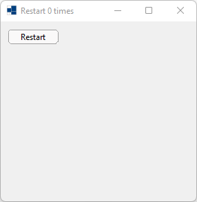
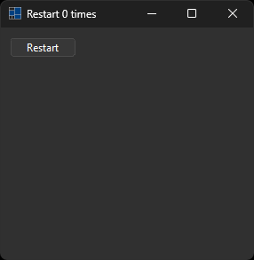
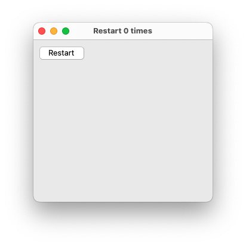
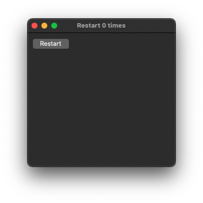
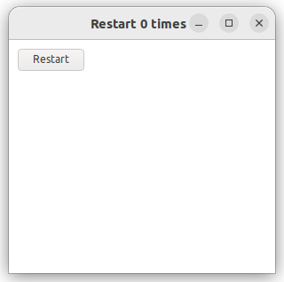
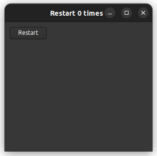

|
xtd
0.2.0
|
application_restart.cpp
Shows how to create an application with xtd::forms::application::restart method.
- Windows
- 

- macOS
- 

- Gnome
- 

#include <xtd/forms/application>
#include <xtd/forms/button>
#include <xtd/forms/form>
#include <xtd/environment>
using namespace std;
using namespace xtd;
using namespace xtd::forms;
auto main()->int {
auto restart_count = environment::get_environment_variable("application_restart_count").empty() ? 0 : parse<int>(environment::get_environment_variable("application_restart_count"));
auto main_form = form::create(ustring::format("Restart {} times", restart_count));
auto restart_button = button::create(main_form, "Restart", {10, 10});
restart_button.click += application::restart;
application::run(main_form);
}
int parse< int >(const std::string &str, number_styles styles)
Convert a string into a type.
Definition: parse.h:126
std::string to_string(const date_time &value, const std::string &fmt, const std::locale &loc)
Convert a specified value into a string with specified format and locale.
Definition: date_time.h:1063
The xtd::forms namespace contains classes for creating Windows-based applications that take full adva...
Definition: about_box.h:13
The xtd namespace contains all fundamental classes to access Hardware, Os, System,...
Definition: system_report.h:17
Generated on Sun Oct 1 2023 07:46:00 for xtd by Gammasoft. All rights reserved.